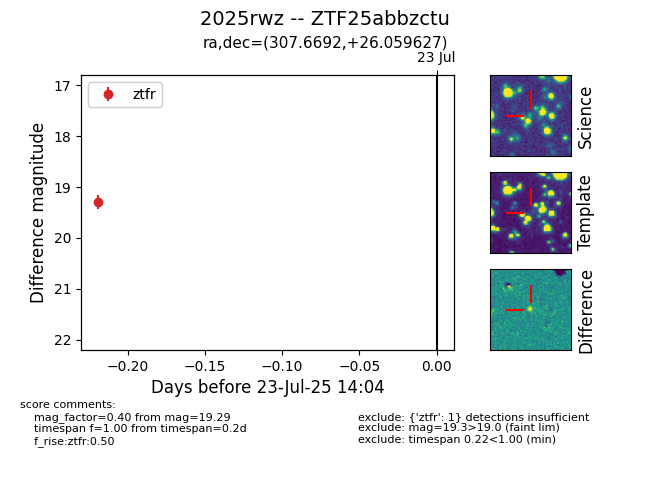

Target ZTF25abbzctu at 2025-07-23 14:04, see:
FINK: fink-portal.org/ZTF25abbzctu
Lasair: lasair-ztf.lsst.ac.uk/objects/ZTF25abbzctu
ALeRCE: alerce.online/object/ZTF25abbzctu
TNS: wis-tns.org/object/2025rwz
YSE: ziggy.ucolick.org/yse/transient_detail/2025rwz
alt names
ZTF25abbzctu (ztf,fink)
2025rwz (tns,yse)
coordinates:
equatorial (ra, dec) = (307.6692,+26.05963)
galactic (l, b) = (67.5478,-7.76800)
photometry
last ztfr=19.29
1 ztfr detections
